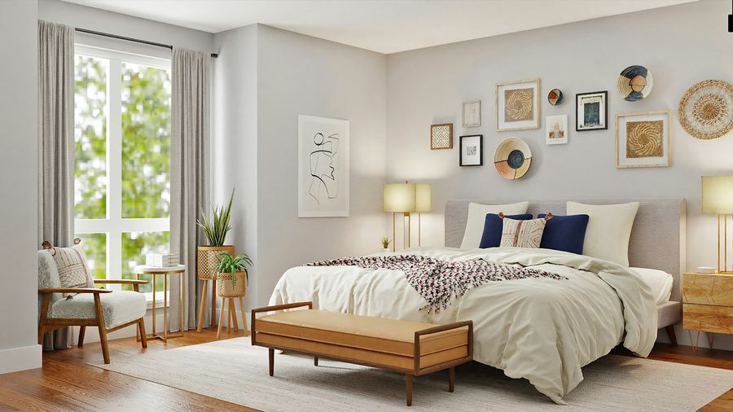
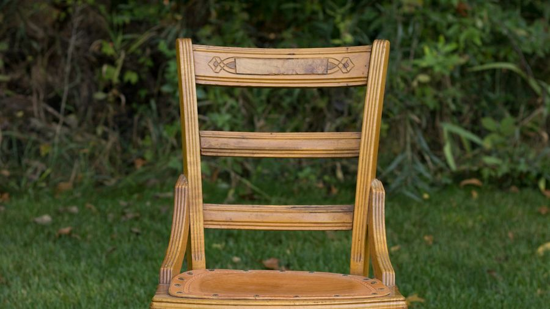
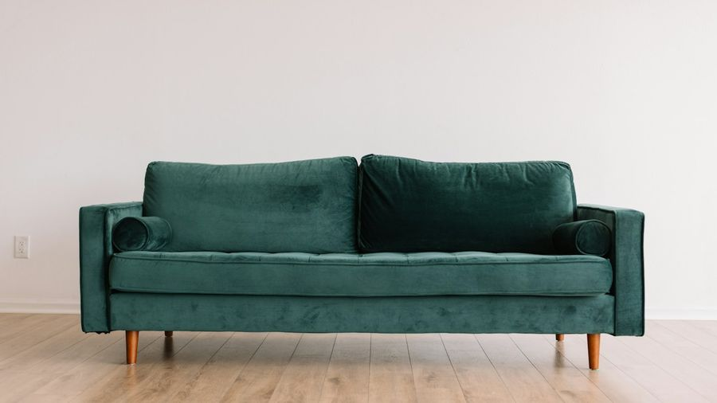
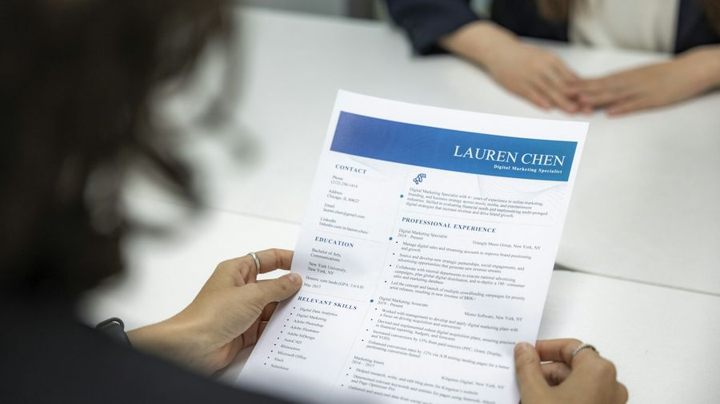

Grammatikfokus
Verben mit mich, dich, sich … mir, dir – vom Aufstehen bis zum Sich-Wohlfühlen. Ein kleines Thema — klar erklärt, geübt und gesprochen. 🪞
Die Regel in 3 Schritten
Wann heißt es mich und wann mir? Ganz einfach:

1️⃣ Reflexivpronomen im Akkusativ
„Ich wasche mich.“ · „Freust du dich?“
Subjekt und Objekt sind dieselbe Person. Formen: ich → mich, du → dich, er/sie/es → sich, wir → uns, ihr → euch, sie/Sie → sich.

2️⃣ Dativ – wenn ein Objekt dazukommt
„Ich wasche mir die Hände.“ · „Ich wünsche mir ein Buch.“
Kommt ein zweites (Akkusativ-)Objekt dazu, steht das Pronomen im Dativ: mir, dir, sich, uns, euch, sich.

3️⃣ Wohin kommt das Pronomen?
Normal direkt nach dem Verb: „Ich freue mich.“ In der Frage: „Freust du dich?“ Im Imperativ: „Beeil dich!“
| Verb | Pronomen (ich-Form) | Kasus |
|---|---|---|
| sich freuen | freue mich | Akk. |
| sich waschen | wasche mich | Akk. |
| sich anziehen | ziehe mich an | Akk. |
| sich beeilen | beeile mich | Akk. |
| sich setzen | setze mich | Akk. |
| sich ausruhen | ruhe mich aus | Akk. |
| Verb | Pronomen (ich-Form) | Kasus |
|---|---|---|
| sich ärgern | ärgere mich | Akk. |
| sich erinnern | erinnere mich | Akk. |
| sich entschuldigen | entschuldige mich | Akk. |
| sich etwas wünschen | wünsche mir | Dativ |
| sich etwas kaufen | kaufe mir | Dativ |
| sich verabreden | verabrede mich | Akk. |
| Verb | Pronomen (ich-Form) | Kasus |
|---|---|---|
| sich bewerben (um) | bewerbe mich | Akk. |
| sich gewöhnen (an) | gewöhne mich | Akk. |
| sich beschweren (über) | beschwere mich | Akk. |
| sich verlassen (auf) | verlasse mich | Akk. |
| sich etwas merken | merke mir | Dativ |
| sich etwas vorstellen | stelle mir vor | Dativ |
🎡 Drehrad
Beispiele im Kontext
Mehrere Sätze pro Verb aus dem echten Alltag + ein Mini-Dialog zum Aufklappen. Genau diese Verben kommen im Sprechteil wieder! (Niveau oben umschalten.)

🎭 Mini-Dialog
A: Warum lächelst du?
B: Ich freue mich, bald ist Urlaub!
🎭 Mini-Dialog
A: Bist du fertig?
B: Gleich – ich wasche mich noch schnell.
🎭 Mini-Dialog
A: Zieh dich an, wir gehen!
B: Moment, ich ziehe mich gerade an.
🎭 Mini-Dialog
A: Wir sind spät dran!
B: Ich beeile mich schon!

🎭 Mini-Dialog
A: Bitte setzen Sie sich.
B: Danke, ich setze mich hierhin.

🎭 Mini-Dialog
A: Was machst du am Sonntag?
B: Nichts – ich ruhe mich aus.

🎭 Mini-Dialog
A: Alles ok?
B: Ich ärgere mich nur über den Stau.

🎭 Mini-Dialog
A: Erinnerst du dich an das Konzert?
B: Klar, daran erinnere ich mich gern!
🎭 Mini-Dialog
A: Tut mir leid!
B: Du brauchst dich nicht zu entschuldigen.
🎭 Mini-Dialog
A: Was wünschst du dir?
B: Ich wünsche mir ein ruhiges Wochenende.
🎭 Mini-Dialog
A: Schön, die Jacke!
B: Danke, die habe ich mir gestern gekauft.

🎭 Mini-Dialog
A: Was machst du heute Abend?
B: Ich habe mich mit Freunden verabredet.

🎭 Mini-Dialog
A: Kommst du zur Ausstellung?
B: Gern, ich interessiere mich für Kunst.
🎭 Mini-Dialog
A: Pizza oder Pasta?
B: Ich entscheide mich für Pizza!

🎭 Mini-Dialog
A: Und der Job?
B: Ich habe mich gestern beworben.

🎭 Mini-Dialog
A: Wie ist das neue Büro?
B: Gut, ich gewöhne mich langsam daran.

🎭 Mini-Dialog
A: Das Essen ist kalt!
B: Dann beschwer dich beim Kellner.

🎭 Mini-Dialog
A: Schaffst du das?
B: Ja, verlass dich auf mich!

🎭 Mini-Dialog
A: Vergiss den Termin nicht!
B: Keine Sorge, ich merke ihn mir.
🎭 Mini-Dialog
A: Wer bist du?
B: Oh, ich stelle mich vor: Ich bin Max.

🎭 Mini-Dialog
A: Heißt es „mir“ oder „mich“?
B: Mit Objekt (die Haare) → „mir“: „Ich kämme mir die Haare.“
🎭 Mini-Dialog
A: Gefällt es dir hier?
B: Ja, ich fühle mich sehr wohl.
Üben
Gemischte, interaktive Übungen — die Antworten sind quer gemischt (nicht der Reihe nach). Niveau oben umschalten.

✍️ Welches Reflexivpronomen passt?
🖼️ Bild-Quiz: Welches Pronomen?
„Schnell, wir müssen ___ beeilen!“„Zum Geburtstag wünsche ich ___ ein Buch.“„Er ärgert ___ über den Stau.“„Wir verabreden ___ für Freitag.“„Ich gewöhne ___ an die Stadt.“„Die Nummer? Ich merke ___ sie sofort.“„Die Gäste beschweren ___ über das Essen.“✅ Akkusativ oder Dativ?
🔀 Subjekt ↔ Pronomen
Subjekt
Pronomen
Subjekt
Pronomen
Satz
Pronomen
🧩 Situation ↔ reflexives Verb
Situation
Verb
🏆 Das große Reflexiv-Quiz
🗣️ Sprechen & wiederholen
Die 90-Sekunden-Challenge: Thema ziehen, Stichpunkte lesen und 90 Sekunden am Stück frei sprechen. Passt sich dem Niveau an (oben umschalten).
⏱️ 90-Sekunden-Challenge
💬 Dialoge zum Mitlesen
Lest die kurzen Alltagsszenen zu zweit laut vor – Rolle A und Rolle B. Die markierten Teile zeigen das Reflexivpronomen + Verb. Tauscht danach die Rollen. Zum freien Üben: unten eine Seite verdecken – die andere spricht frei, zum Prüfen auf die verdeckte Blase tippen. (Niveau oben umschalten.)